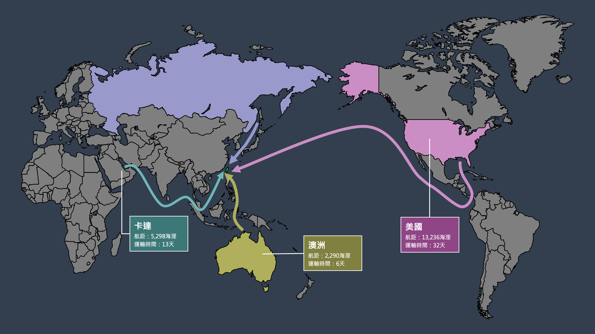
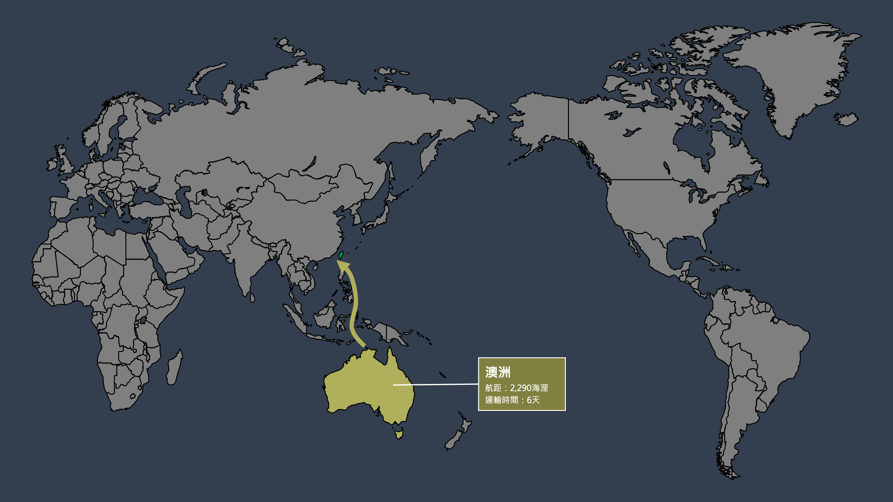
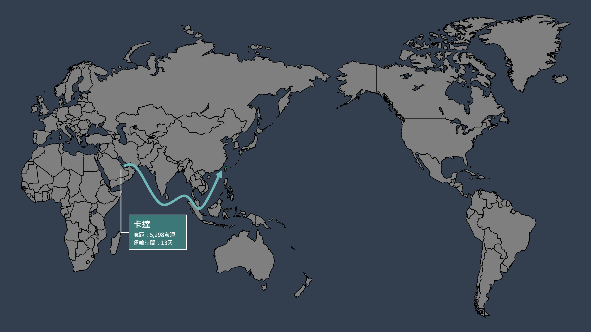
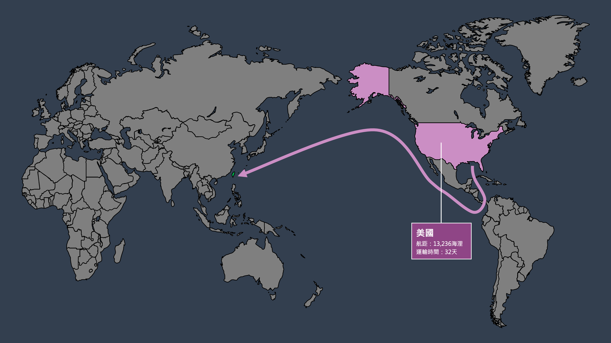
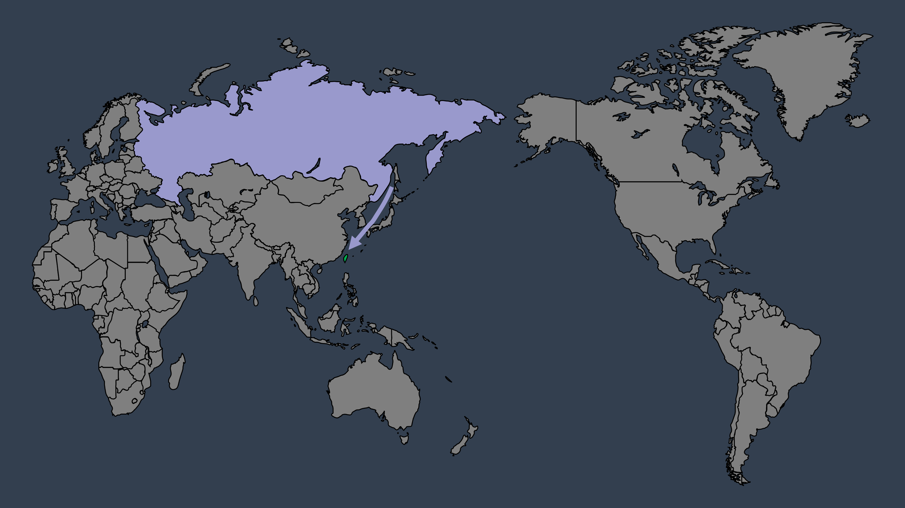

在報導開始之前，請先看一段影片，讓我們看看台灣民眾對於國內的能源供給了解程度。
根據聯合國下組織「政府間氣候變化專門委員會」指出，為了把全球暖化限制在1.5°C以內，全球需要在2050年前達到淨零排放，對此世界已有130多國提出「2050淨零排放」的宣示與行動。雖然台灣並非聯合國會員，沒有被明文要求，但作為一個海島國家，台灣本就面臨更高的氣候風險。此外，由於許多重要貿易國如美國、歐盟、日本等已明確設定
2050 淨零，為了確保供應鏈穩定與市場競爭力，台灣必須跟上國際低碳轉型步伐。
2025隨著核三廠停機，台灣正式邁入「非核家園」時代，為了達成2022年行政院宣布的2050淨零目標。賴政府也在今年公布的「國家減碳新目標」草案中，提出了相較於 2005 年基準年，台灣在 2032 年減碳 32±2%、2035 年減碳 38±2% 的目標。作為因應，經濟部預估天然氣在台灣的發電占比，預計從 2024 年的 47%，提高到 2032 年和 2035 年的 54%，綠能則目標2032到達31%，2035到達36%，進一步壓縮煤炭發電的占比，以天然氣持續作為台灣發展綠電的過度能源，降低煤炭發電所造成的高碳排和空氣汙染問題。
47%
2024年天然氣發電占比
73%
2024年三大供應國占比
691億
2024年中油虧損
2026天然氣價格預計走低，
但供應鏈的不穩定依然威脅台灣能源安全
三國掌握七成供應，台灣天然氣來源集中化加劇
洲別多元帶動航線多元，
台灣開拓能源避險新路徑
圖表三：台灣天然氣進口國（澳洲、卡達、美國、俄羅斯）航線圖

台灣天然氣進口國航線圖

台灣2024年LNG第一大進口國：澳洲
澳洲的航線主要經由菲律賓群島東側，最終抵達台灣西南邊的天然氣接收站，相對會直接經過南海的西南航線，此路徑的地緣政治風險相對較低。

台灣2024年LNG第二大進口國：卡達
卡達的LNG船由荷莫茲海峽出發，途經麻六甲海峽與南海後抵達台灣，航線橫跨中東與南亞的戰略熱點，地緣政治風險相對較高，潛在影響供應穩定性。

台灣2024年LNG第三大進口國：美國
美國的航線橫越太平洋直達台灣，雖然運輸距離較遠、時間較長，但整體航程避開高風險區域，相對而言具有較高的供應安全性。

台灣LNG進口國：俄羅斯
自2022年俄烏戰爭爆發後，台灣降低對俄羅斯的LNG依賴，至2024年，來自俄羅斯的進口量僅佔總量約2%。
參考資料：Marine Traffic、石油通訊109年4月號824期
天然氣價格風險與供應鏈挑戰
不過，若從來源國的地理分布（洲別）觀察，則呈現出另一種趨勢。從圖表三的世界地圖來看，台灣目前 LNG
進口來源已遍及亞洲、中東、大洋洲與北美洲，與早期主要仰賴亞洲區域相比，逐步轉向「洲別多元化」的佈局。這樣的轉變雖未擴大來源國數量，卻有效拓展了天然氣航線的選擇空間與策略彈性。
根據能源署 2019 年報告，台灣 LNG
共有四大進口航線，其中僅西南航線需穿越具潛在軍事風險的南海，其餘三條則相對安全。過去多數供應來自卡達、馬來西亞、印尼，運輸路徑多經南海進入台灣西部接收站；但隨著美國與阿拉斯加等北美供應比重上升，台灣得以透過北太平洋航線進口
LNG，有效避開南海路徑，降低航運風險。
整體而言，雖仍有部分天然氣來自需經南海的供應國，但不需經南海的來源（如美國、阿拉斯加）占比持續上升。根據 2025
年中央社報導，為回應美方關切貿易不平衡，經濟部長郭智輝表示，台灣未來將擴大自美國採購天然氣，目標占比達 2 至 3 成，有助於進一步強化航線分散化的布局。
因此，即使台灣 LNG 來源國集中度上升，「洲別多元化所帶來的航線多元化」，仍成為降低地緣風險的重要戰略補償。2025 年 3 月，中油與阿拉斯加天然氣公司簽署合作備忘錄，預計自 2029
年起，每年供應 360 萬噸 LNG，進一步穩固北美航線的能源戰略地位。
總結而言，台灣天然氣進口結構正從「鄰近區域、來源分散」轉型為「來源集中、洲別多元」的複合型態。雖然這樣的布局有助於分散運輸風險、強化供應穩定性，但在實際成本上，天然氣價格仍高度敏感於國際市場變化，特別是短期波動與地緣政治衝擊。
天然氣進口價格波動，現貨價受市場影響劇烈
台灣的天然氣採購方案分為兩種——契約期間1年以上的中長約和1年以下的現貨採購。目前作為發電主力的前三大天然氣進口來源——澳洲、卡達和美國皆是中長期合約佔比較多，價格波動較小，能夠維持基礎發電量。進口國如印尼、馬來西亞，則是在2017和2020年合約期滿後轉以現貨為主，作為天然氣進口多元化的補充來源。
在價格部分，天然氣現貨採購價格受國際市場波動影響，其價格的變化與地緣政治、運輸風險、氣候因素、市場競爭和出口國能源政策調整息息相關。
圖表說明：此圖表顯示2012-2022年各國LNG進口平均單價的趨勢變化，可切換現貨與長約數據。
各國每年進口平均單價
資料來源：2014-2023年度台灣中油股份有限公司營業預算評估報告
（2014年為中油公司的模擬數據，2022年為1月-8月數據）
根據中油的天然氣進口來源及數量統計，中長期約和現貨價格在2012至2022年呈現一致的走勢。其中價格波動劇烈的時間點有三個。
首先2018年2 月至 3
月巴布亞紐幾內亞發生地震，距震央約 600
公里的LNG廠被迫停擺，直至 4 月 16 日恢復營運，波及亞洲 LNG 現貨價格上揚。到了2020年，隨著國際天然氣市場眾多 LNG 出口計畫陸續啟用，澳洲、美國及俄羅斯等國帶動全球 LNG
出口產能，國際市場供過於求。於市場供應過剩之情境下，天然氣現貨價格下跌，並出現低於中長約之狀況。因此，現貨的靈活性為市場買家帶來更多可操作空間，台灣也轉向提高現貨進口。然而2022年俄烏戰爭爆發，天然氣價格受到衝擊，通過計算台灣歷年天然氣進口平均單價，我們發現在2020年至2022年，2年間，天然氣的中長約價格增加一倍，現貨價格變成原本的近
8 倍。地緣政治和戰爭對於天然氣價格的影響由此體現。
電價凍漲，中油台電虧本賣氣和電
面對天然氣價格的暴漲，國內天然氣牌價則沒有過度的調漲，探究其原因，是中油在背後默默吸收成本。截止2025年1月18日， 受油氣補貼政策拖累，中油2024年營收1.1兆元，累積虧損691億，財務狀況堪憂。在2023年做客寶島聯播網時，當時的中油董事長李順欽也曾表示「我給電業（用戶）打8折多，我對民生工業打四折在賣」。
圖表說明：此圖表顯示2012-2022年各國LNG進口總金額的堆疊柱狀圖，可切換現貨與長約數據。
各國每年進口總金額
資料來源：2014-2023年度台灣中油股份有限公司營業預算評估報告
（2014年為中油公司的模擬數據，2022年為1月-8月數據）
但整體而言，受俄烏戰爭、全球能源價格波動，台灣2025年發電成本已經較原本預估的3.2–3.4 元/kWh，調漲至 3.9 元。且 2022 年起，開始減少對台積電等工業大戶的補貼，電價調幅達 50%，而民生僅調 7%。台灣環境規劃協會理事長趙家緯表示，過去台積電用電比住家還便宜，現在結構已調整為「民生負擔較低，企業承擔較多」。 至於未來中油還要不要虧本吸收成本？台電究竟該不該漲價？目前政府的回答是「考量國際關稅變化與地緣政治風險，為照顧民生、穩定物價，2025年上半年電價不漲不降」。
亞洲LNG價格走勢圖 (2012-2024)
資料來源：Investing.com
而從天然氣在亞洲市場的走勢來看，隨著需求疲軟、替代燃料價格更低，和持續的貿易緊張影響，亞洲液化天然氣（LNG）價格在2023年後逐漸下跌，並於2025年4月29日跌至約一年來最低，也促進中油買進一批6月交貨的LNG。但是隨時歐洲的嚴冬、俄羅斯産天然氣的流入減少，中美貿易戰、美國天然氣價格攀升等影響，亞洲市場價格可能會受到聯動影響，從而在台灣能源轉型的背景下，導致發電成本上升和電價持續上漲。
所幸，根據美國四大會計師事務所之一的德勤（Deloitte）預計2025~2026亞洲JKM價格（Japan Korea Marker，反映亞洲地區LNG買賣的現貨價格)約 13~15美元/MMBtu（Million British Thermal Units，百萬英熱單位）。但到了2026以後，隨著美國、卡達LNG新產能上線、中國、印度等主要進口國經濟成長減緩，LNG價格預期逐步下滑，亞洲價格降至 12~13 美元/MMBtu。
最後，為了因應台灣「非核家園」時代，和2050淨零目標，天然氣佔台灣整體發電比例勢必將繼續增加，如何讓這項極度依賴進口的能源，控制成本價格，開拓多元化的輸入來源，維持天然氣的供應穩定度，並且讓中油和台電做到永續發展，反映市場機制，可能是賴政府在能源政策上需要繼續思考和研究的問題。
李能源 博士
台灣能源政策研究中心主任
深度解析：天然氣供應鏈的挑戰與機會
00:00
15:30